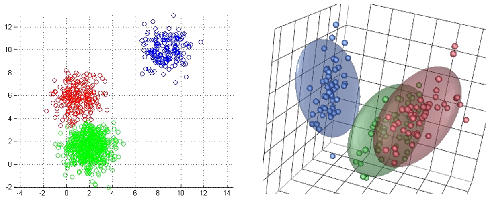
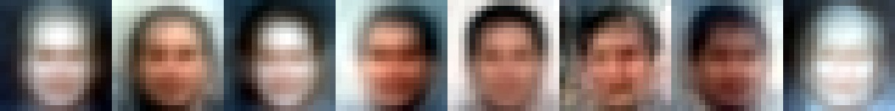
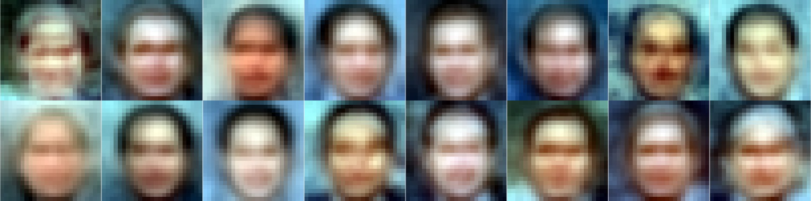
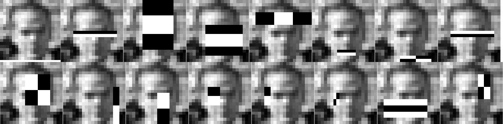

Computer Vision — Facial Recognition using Gaussian Mixture Models, Adaboost & Haar Features, and more...
Individual Project (& one Group Project)
Overview:
Project 1: Facial Detection using Classical Machine Learning with Various Mixture Models

Mixture models are using some distribution in N-dimensional space and clustering for classification. For example, the figure above shows a data in 2 & 3-D spaces and how they would be classified using a Gaussian mixture model. Note that these classification models can be distinct (where each cluster is a seperate form of classification) or merged (where everything a cluster is something, and everything excluded is not something). For facial detection, a merged model is used in a high dimensional space for classifying whether something is a face or not. The dimensionality is based off the number of pixels in the training images. Below are 20x20 (row 1) and 25x25 (row 2 & 3) Gaussian mixture models with 8 clusters. The means of each cluster are displayed below:


For this project, a t-Distribution, mixture of t-Distribution, as well as factor analysis were completed.
Project 2: Facial Detection using Viola-Jones Algorithm: Adaboost + Haar-like Features
Haar-like features can be used in junction with Adaboost to create a lightweight and fast facial detection model. It is colloquially known as the Viola-Jones object detection algorithm, but has been popularized for facial recognition. It is commonly used by digital cameras to detect faces prior to taking photographs. For this project, this was implemented and trained using a face dataset. To achieve the lowest of accuracies, only the first 10-20 features need to be checked, but to achieve the full accuracy of the model, all features must be checked in a cascade fashion. Below is a sample image alongside the 15 strongest features for the face dataset. A total of ~250 features were used in multiple models for this project.

Project 3: Facial Detection using Simple Deep Learning
{kind=link}